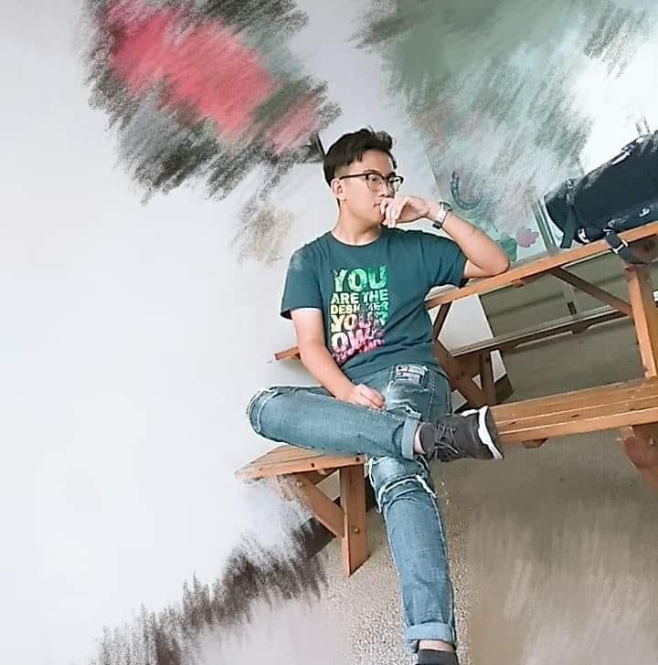

個人資料
 姓名｜黃昱瑋系級｜資管二乙
學號｜10944238
興趣｜寫程式、旅遊、唱歌
"人生永遠也不知道有沒有下個明天，
不如把握自己擁有的今天"


學習歷程
中原大學
 時至今日，上了大學，也跟前面預先規劃的相同，選擇了資訊管理系，兼顧前面兩項注重點，對於資訊程式的撰寫以及行銷方面的知識也加深了許多，對於不同的對象，選擇不一樣的應對方式，也同時在校持續加深自己的知識跟實戰經驗。
時至今日，上了大學，也跟前面預先規劃的相同，選擇了資訊管理系，兼顧前面兩項注重點，對於資訊程式的撰寫以及行銷方面的知識也加深了許多，對於不同的對象，選擇不一樣的應對方式，也同時在校持續加深自己的知識跟實戰經驗。校旨:
全人教育
以簡單的四個字，也包刮了我這四個學期的所有含意
就讀學校
程式相關 Program Related
HTML
85%
CSS
80%
JavaScript
60%
C#
30%
商業相關 Business Related
會計
90%
經濟
80%
企概
30%
統計
45%
技能
工作經歷
俊端公司是我第一份打工，雖然僅僅只有兩個月，卻在裡面學習了簡單測試軟體的方式，也在膨大的壓力下，提升了自己測試與應用的速度。
課程經歷
管理學-木匠的家
再去木匠之家之前卻從沒有進去逛過，更不了解，他開店的目的與由來，但為了幫助木匠的家，我們也學習到了很多在學校學不到的東西，也利用自己的商業知識，幫助木匠的家改善他們的販售方式，像是使用綑綁策略、畸零定價法等等，並擺攤將每一項愛心商品販售出去。
企業概論-路得學園
在這次實習過後，我其實才真正的了解到弱勢族群，不管是工作的待遇或是在特殊學校的應對方式，甚至我還發現有些其實跟一般人沒有差別，也了解他們的目的以及活動的舉辦，也幫助他們販售純手工製作的雪Q餅，受益極大。
英文-微電影
第一次自己從討論劇本到安排劇情，甚至到後面的場地租借、人員分配，還使用英文拍攝20分鐘的微電影，但讓我學了很多，特別是在人員的安排上，是一個十分大的挑戰，在半年的努力下，也得到第一名。
視覺傳播-短片製作
有了之前拍攝的經驗，因此有了基本的基礎，但在該課中學習到更多更詳細的步驟，像是要畫分鏡圖，或是各種角度拍攝的選擇，都明顯比到現在才開始想布景來的更有計畫性及完整性，這部影片依然還在製作中....
我的經歷，仍持續在更新中...
.
.
.
.
版權歸昱瑋的大理石天地所有